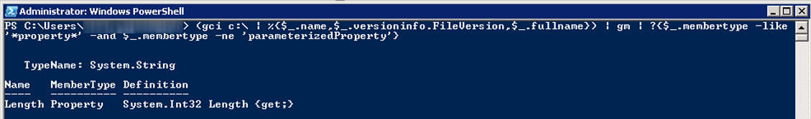
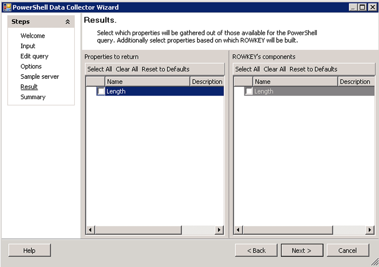

Summary: Provides an explanation and example of how to create custom PowerShell scripts for StealthAUDIT's PowerShell data collector.
Issue: Provides an explanation and sample script describing how to create a custom object in PowerShell so that StealthAUDIT's PowerShell data collector returns the data as expected.
Instructions: The parser takes whatever object it's passed first and attempts to enumerate the members to get the columns, then looks at the object definition to translate the object's properties into columns in SQL. The following is a simplified example of how the data collector would parse an object.
Here's a simple PowerShell command, that doesn't return a very clear object.
In fact, if pipe it to the get-member command above, all you get is "Length"

Which is the same as what the PowerShell DC gets when you run the validation.

In order to get this to parse, we need to pass the DC an object (or a series of
objects, only the first of which will generally be parsed). I usually use the following format, which defines and populates an "$output" variable and then displays its contents.
foreach ($obj in ($folders))
{
#instantiate the object and its properties
$output= "" | select Name, FileVersion, FullName
#assign values to the properties
$output.Name=$obj.Name
$output.FileVersion=$obj.VersionInfo.FileVersion
$output.FullName=$obj.FullName
#pass the object to the Data Collector
$output
}
Note: If you want to, you could run the following line to have PowerShell
parse this $output object back out, similar to how StealthAUDIT would.
Important note about memory consumption
This could result in out of memory errors on larger systems, if you added -recurse, for example.
The proper way to handle that would be to stream the data into the loop, rather than storing it into a variable first.
$OSInfo=(get-wmiobject win32_operatingsystem -computername [SAHOSTNAME])
get-wmiobject win32_logicaldisk -computername [SAHOSTNAME] | ?{$_.drivetype -eq 3}) | foreach-object
{
$output="" | select SerialNumber, Version, DeviceID, FreeSpace, Size, RowGUID
$output.SerialNumber=$OSInfo.SerialNumber
$output.Version=$OSInfo.Version
$output.DeviceID=$_.DeviceID
$output.FreeSpace_GB=$_.FreeSpace / 1GB
$output.Size_GB=$_.Size / 1GB
$output.RowGUID=[guid]::NewGUID()
$output
}
Protip: If your validation passes, but it doesn't return the columns you're expecting, it's because there's another object that's being returned before yours. This happens sometimes with action cmdlets, like new-item or connect-PSSession that return output (sometimes silently). The solution here is to either save to a variable (if you want to use the output object later), or pipe to out-null.
Product:
StealthAUDIT
Module: SA
- DC - PowerShell
Versions:
all
Legacy Article ID:
1865